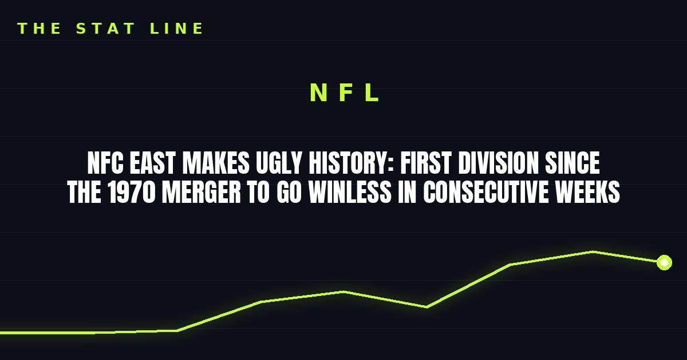

NFC East Makes Ugly History: First Division Since the 1970 Merger to Go Winless in Consecutive Weeks
The Commanders' 23-17 loss to the 49ers sealed it: the NFC East went 0-6-2 across Weeks 5 and 6, the first division since the AFL-NFL merger to go winless in back-to-back full weeks.

Disclosure: this post contains affiliate links. I earn a commission on qualifying purchases.
When Washington fell 23-17 to San Francisco on Monday night, the NFC East didn't just lose a game — it made history nobody wants. The division is now the first since the 1970 AFL-NFL merger to go winless in consecutive weeks in which all four teams played, finishing a combined 0-6-2 across Weeks 5 and 6.
How it happened
• Cowboys (0-2): lost 24-16 to the Buccaneers on Thursday Night Football, then 23-13 to the Packers on Sunday Night Football. Two prime-time losses in four days.
• Eagles (0-2): fell to the Jaguars and Panthers — four straight losses overall, their first such skid since 2020.
• Giants (0-1-1): tied the Commanders 27-27 in overtime in Week 5, then lost 34-27 to the Saints.
• Commanders (0-1-1): tied the Giants in Week 5, lost to the 49ers on Monday night.
Zero wins, six losses, two ties. No division had ever done that across two full weeks.
The standings are a mess
Giants: 3-2-1
Eagles: 2-4
Cowboys: 2-4
Commanders: 1-4-1
The Giants lead the division at barely above .500 despite quarterback chaos — Jaxson Dart is out for the season with a knee injury suffered in Week 2, and head coach John Harbaugh is still sorting between Jameis Winston and J.J. McCarthy after benching Winston against New Orleans.
Philadelphia's collapse is the stunner: the two-time defending division champs have dropped four straight, and Jalen Hurts was ruled out for the rest of the season Monday after doctors discovered blood clots in his lungs.
Dallas is somehow still the betting favorite to win the division, which tells you everything about how wide open this race is. Their defense ranks last in the league in yards allowed per play (382.5 per game).
What Week 7 holds
The Commanders are on bye. The Giants visit the 2-4 Texans. And the Cowboys and Eagles face each other for the first time this season — a matchup of two 2-4 teams that suddenly carries real division weight.
The last time the NFC East crowned a sub-.500 winner was 2020, when Washington took it at 7-9. At this rate, don't rule out a repeat.
Sources: theScore · GiantsWire: "Giants stay atop NFC East after division's historic winless stretch" · AP via The Spun
Gear up: Sports category post → [Fanatics](https://fanatics.93n6tx.net/WOLjqe): via Fanatics